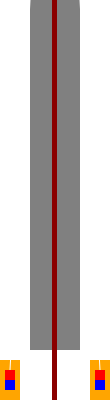

main page
Wind turbines are hard to recycle, expensive, noisy, kill birds
and often equipped with gearboxes and brakes, thus requiring
lots of maintance. I think I came up with a better way of
converting wind into electricity, it is called Wind Stick:

My idea is simple - mount a solid rod, wrap some foil around it
(many companies throw away plenty of it), attach one end of the
strings to the top of the structure, the other end to the magnets
that will move up and down inside the inductors, thus inducing
electricity in them. Thanks to solid rod the structure will move
back and forth during wind. Higher number of alternators (strings,
magnets, inductors) means higher efficiency. To make it even
cheaper it is possible to attach such alternators to the branches
of trees.